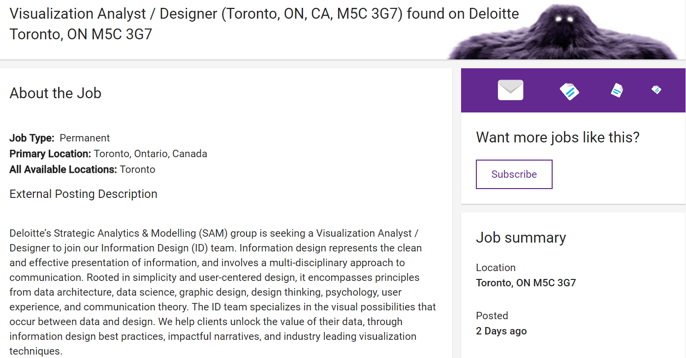

12: Finale
Matt Price
Introduction to Digital Humanities
Learning Goals
Digital Humanities (DH) is a discipline at the intersections of the humanities with computing.
Digital humanists analyze languages through digital text collections; build digital archives of forbidden books; resurrect historical cities through digital maps; or construct video games to study literature.
This year the course focuses on plague literature: the .
By the end of the course, you will have mastered concepts and technologies you can use in future courses and workplaces: data visualization, data analysis, and digital exhibit platforms. And you will learn how our stories and cultural conversations work and shapeshift through digital environments.
By the end of the course:
You will be able to describe the history and intellectual landscape of the digital humanities, including the central concepts, debates, projects, and digital tools current in the discipline.
You will have developed a set of best practices around datasets, project design and management, and data curation.
You will have analyzed data and digital artifacts as complex cultural objects, shaped by, and shaping, how we live, think, and know.
Job Listing

Requirements vs. Achievements
Job Requirements
Brainstorming solutions to complex business problems through working sessions, wireframing and developing mockups
Developing static infographics and/or interactive data visualizations, that adhere to Information Design best practices, and effectively communicate business insights back to clients
Working through iterative cycles, incorporating feedback and completing user testing and QA
Collaborating extensively with clients and other Deloitte teams
Liaising with data science and data architecture team members to optimize client data for visualization purposes
Managing project timelines and client deliverables
WDW235 Achievements
Completed a major digital exhibit project, from research on plague literature, to analysis of a signficant work, to a public-facing digital exhibit about censorship and knowledge transmission
Developed static infographics and an interactive digital exhibit using high-uptake technologies, adhering to data management best practices, and effectively communicating original artifact analyses to public audiences
Worked through iterative cycles, from proposal pitch to mock-up development, incorporating feedback at each stage
Managed project timelines and multiple deliverables
Continuing in DH
Statistical reasoning
programming skills
close reading
creativity